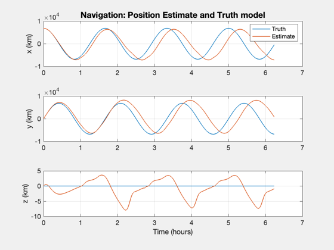
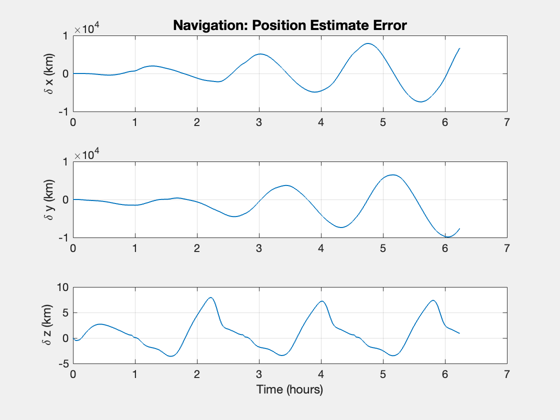
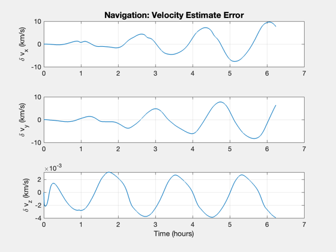
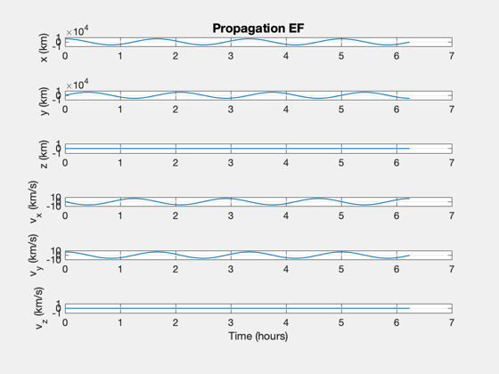

Demonstrate navigation in low earth orbit.
Uses GPS and a range/rate sensor.
The gravity model is point mass without any perturbations or disturbances such as solar or aerodynamics.
This demo uses the new UKF framework with separate propagate and measurement update functions.
See also RHSOrbitPlanetFixed, MeasGPS, MeasRangeGroundStationEF, UKFPredict
Contents
%--------------------------------------------------------------------- % Copyright (c) 2014, 2023 Princeton Satellite Systems, Inc. % All rights reserved. %---------------------------------------------------------------------
Constants
%-----------
rE = 6378.165;
mu = 3.98600436e5;
radToDeg = pi/180;
omegaE = 2*pi/86400;
jD0 = Date2JD([2016 4 4 0 0 0]);
User inputs
%------------- % Script control %--------------- useGPS = 0; % 1 = use GPS useRange = 1; % 1 = use range to the target sigmaRangeGPS = 0.001; sigmaRangeRateGPS = 1e-5; sigmaRange = 0.001; sigmaRangeRate = 1e-5; rGPS = diag([sigmaRangeGPS sigmaRangeRateGPS].^2); dR = 2e-3; % GPS position accuracy, 1 sigma (km) dV = 4e-6; % The initial velocity error 1 sigma (km/s) fQ0 = 0.000011; % The model covariance will be this fraction of the initial acceleration % Roughly the effect of the J2 term qR = [1; 1; 1]*1e-10; % Uncertainty in the derivative states hPerigee = 450; % km hApogee = 450; % km inclination = 0; % degrees % Set the seed for the random number generators. % If the seed is not set each run will be different. %--------------------------------------------------- seed = 45198; rng(seed); % Set up the orbit %----------------- rP = hPerigee + rE; rA = hApogee + rE; [a, e] = RPRA2AE( rA, rP ); p = Period( a ); nOrbits = 4; dT = 2; nSamples = ceil(nOrbits*p/dT);
Orbit
%------- i = inclination*radToDeg; % Inclination (rad) el = [a i 0 0 e 0]; % Generate the initial orbit %--------------------------- [r0, v0] = El2RV(el,mu); rGS = Unit(r0)*rE; dRHS = RHSOrbitPlanetFixed; dRHS.mu = mu; dRHS.theta0 = 0; dRHS.omega = omegaE; dRHS.aECI = [0;0;0]; % Adjust for the rotation of the earth %------------------------------------- v0 = v0 - Cross([0;0;dRHS.omega],r0); x0 = [r0;v0];
Navigation setup
%------------------ % GPS sensor data structure %-------------------------- dGPSSim.noise = [0;0]; dGPSSim.rE = rE; dGPSSim.rRef = 1; dGPSSim.hMin = 10; dGPSSim.jD = jD0; dGPSSim.jD0 = jD0; dGPSSim.theta0 = 0; dGPSSim.omega = omegaE; dGPS = dGPSSim; dGSSim.rGS = rGS; dGSSim.noise = [0;0]; dGSSim.jD = jD0; dGSSim.rRef = 1; dGS = dGSSim; % The initial covariance %----------------------- p0 = diag([dR dR dR dV dV dV].^2); % Base the initial model covariance on a fraction of the gravitational % acceleration %--------------------------------------------------------------------- a0 = mu*r0/Mag(r0)^3; q0 = diag([qR; (fQ0*a0).^2]); dRHSEst = dRHS; % Initialize the Unscented Kalman Filter %--------------------------------------- ukf = KFInitialize( 'ukf','f',@RHSOrbitPlanetFixed,'alpha',0.1,... 'kappa',0,'beta',2,'dT',dT,'fData',dRHSEst,... 'p',p0,'q',q0,'x',[r0;v0], 'm',[r0;v0]);
Navigation simulation
%----------------------- % Run the optical navigation %--------------------------- rEst = zeros(3,nSamples); vEst = zeros(3,nSamples); r = zeros(3,nSamples); v = zeros(3,nSamples); x = x0; t = 0; for k = 1:nSamples % Time %----- jD = jD0 + t/86400; dGPSSim.jD = jD; dGSSim.jD = jD; % Plotting storage %----------------- rEst(:,k) = ukf.m(1:3); vEst(:,k) = ukf.m(4:6); r(:,k) = x(1:3); v(:,k) = x(4:6); % Generate the measurements %-------------------------- % GPS sensor %----------- if( useGPS ) ukf.y(1).data = MeasGPS( x, dGPSSim ); ukf.y(1).param.hFun = @MeasGPS; ukf.y(1).param.hData = dGPS; rB = diag([sigmaRangeGPS sigmaRangeRateGPS].^2); ukf.y(1).param.r = BlockDiagonal(rB,length(ukf.y(1).data)/2); j = 2; else j = 1; end % Range sensor %------------- if( useRange ) ukf.y(j).data = MeasRangeGroundStationEF( x, dGSSim ); ukf.y(j).param.hFun = @MeasRangeGroundStationEF; ukf.y(j).param.hData = dGS; ukf.y(j).param.r = diag([sigmaRange sigmaRangeRate].^2); end % Propagate the orbit %-------------------- ukf.t = t; ukf = UKFPredict( ukf ); % Incorporate the measurements % ---------------------------- if( useGPS || useRange ) ukf = UKFUpdate( ukf ); end % Numerically integrate the truth orbit %-------------------------------------- x = RK4(@RHSOrbitPlanetFixed, x, dT, t, dRHS ); t = t + dT; end
Plot
%------ [t, tL] = TimeLabl((0:(nSamples-1))*dT); % Dimensionalize %--------------- nP = {'[1 4]' '[2 5]' '[3 6]'}; Plot2D(t,[r;rEst],tL,{'x (km)' 'y (km)' 'z (km)'}, 'Navigation: Position Estimate and Truth model', 'lin',nP) legend('Truth', 'Estimate') Plot2D(t,r-rEst,tL,{'\delta x (km)' '\delta y (km)' '\delta z (km)'}, 'Navigation: Position Estimate Error') Plot2D(t,v-vEst,tL,{'\delta v_x (km/s)' '\delta v_y (km/s)' '\delta v_z (km/s)'}, 'Navigation: Velocity Estimate Error') yL = {'x (km)' 'y (km)' 'z (km)' 'v_x (km/s)' 'v_y (km/s)' 'v_z (km/s)'}; Plot2D(t,[r;v],tL,yL,'Propagation EF') % $Date$ % $Id: ad47c087aae34a9dab87825bd20c0c46257d3e97 $   